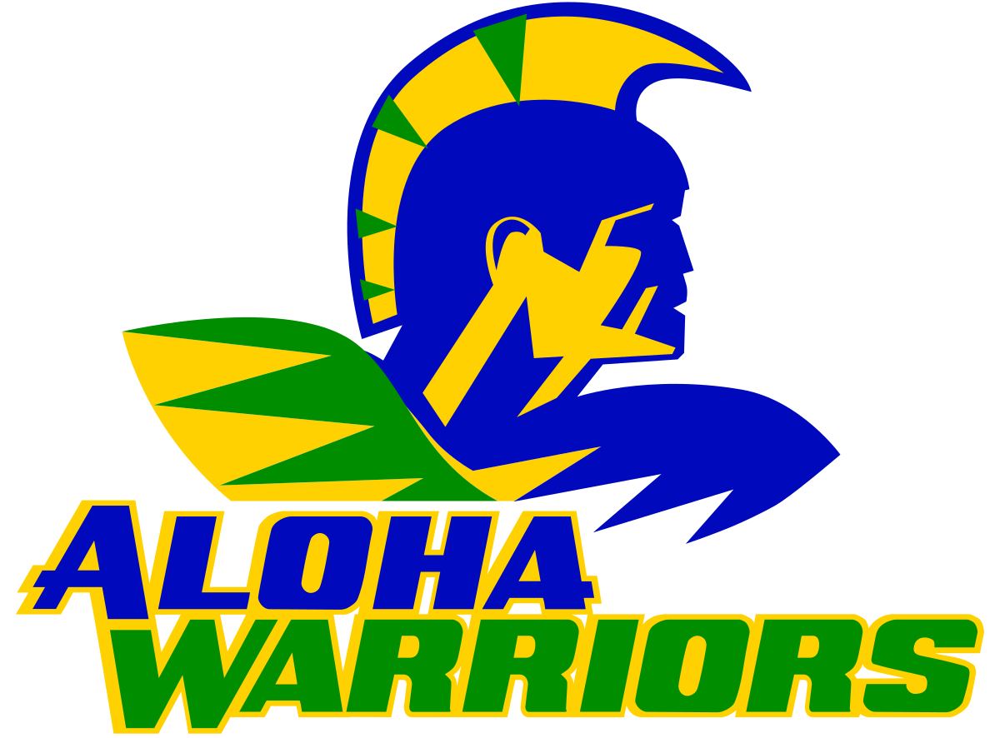

| Home | About | Projects and Skills | Contact | Projects Gallery |
|---|
Sept 4 2019 - June 9 2023
Degree Type: High School Diploma
August 28 2024 - Present
Degree Type: Bachelors in progress
GPA: 3.9

I am a proudly born and raised guy based in the Portland Metro Area. I grew up my entire childhood in the city of Aloha, Oregon. Yes We have rain here for about 9 months and I'm used to this weather lol. I am a very passionate person who grew loving the outdoors and the beauty of nature. I love to hike, swim, and go camping with my friends and family.
Why I chose Computer Sciecnce: I chose computer science because I have always been fascinated by technology and how it can be used to solve real-world problems. I love the idea of creating software that can make people's lives easier and more efficient. I also enjoy the challenge of problem-solving and the satisfaction that comes from building something from scratch.I am currently a student at George Fox University, where I am pursuing a degree in Computer Science. I am excited to learn more about the field and to gain the skills I need to succeed in my career. I am also looking forward to working on projects that will allow me to apply what I have learned in the classroom to real-world situations.
Future goals: My future goals include graduating with a degree in Computer Science, gaining experience through internships and projects, and eventually working as a software engineer. I hope to work on innovative projects that make a positive impact on society and to continue learning and growing in my field. I also aspire to contribute to open-source projects and to mentor others who are interested in pursuing a career in technology. If possible, I dream of owning a Web development agency that specializes in creating user-friendly and accessible websites for small businesses and non-profits. I believe that technology should be accessible to everyone, and I want to help bridge the gap between small businesses and the digital world.